Week 10 — Section-scoped AI chat assistant
Every screenshot below is from an actual run against the live server and a real browser — not a description of what should happen. Runs against the same Postgres dev profile Week 9 set up (no new persistence profile this week, so there's only one environment to validate). Under each screenshot, expand Recreate this step for the exact commands to reproduce it yourself.
| Step | Expected | Result | |
|---|---|---|---|
| 01 | New tables created on startup | section_chat_sessions, section_chat_messages exist | PASS |
| 02–03 | New tables start empty | 0 rows in both, before any chat happens | PASS |
| 04–07 | Seed a Course + 2 Sections (one with LaTeX) | Rows persist, one section contains $x^2$-style math | PASS |
| 08–09 | Register + log in | 201, then 200 with a real JWT | PASS |
| 10 | POST .../chat, new session | 200, real Gemini answer, new sessionId | PASS |
| 11 | POST .../chat, unknown section | 404 {"error":"Section not found"} | PASS |
| 12–13 | GET .../chat/sessions | 200 with array · 403 unauthenticated | PASS |
| 14–15 | GET .../chat/sessions/{id} | 200 for owner · 403 for a different user | PASS |
| 16–17 | Re-inspect the new tables | Stored content is the raw question/answer only, never the augmented prompt | PASS |
| 18–21 | Browser: register → login → /courses → sections | Real pages, real navigation | PASS |
| 22 | Open a section | Markdown headings/lists and KaTeX-rendered math both render | PASS |
| 23–25 | Ask the assistant, start a second thread, switch back | Two independent sessions, sidebar switching works | PASS |
This week touches both repositories. The backend needs the same Postgres container Week 9 introduced; the frontend needs three new npm packages for Markdown/LaTeX rendering that are already committed to package.json.
mvn spring-boot:run below fails with APPLICATION FAILED TO START (see Troubleshooting). Safe to run even if nothing is listening:
lsof -ti:8080 | xargs kill -9 2>/dev/null; true
cd AhaSpace docker compose up -d docker exec ahaspace-postgres pg_isready -U ahaspace -d enlightenment
dev profile, exporting the DB variables in the same command as mvn (see Week 9's troubleshooting notes below for why this matters):
DB_URL=jdbc:postgresql://localhost:5432/enlightenment \ DB_USERNAME=ahaspace \ DB_PASSWORD=ahaspace \ mvn spring-boot:run -Dspring-boot.run.profiles=dev
SERVER IS LIVE on http://localhost:8080!. In the startup log you should also see Hibernate create the two new tables:
Hibernate: create table section_chat_messages (id bigserial not null, content TEXT not null, created_at timestamp(6) not null, model varchar(255), role varchar(255) not null, session_id bigint not null, primary key (id)) Hibernate: create table section_chat_sessions (id bigserial not null, created_at timestamp(6) not null, title varchar(255) not null, section_id bigint not null, user_id bigint not null, primary key (id))This is
ddl-auto=update at work again — same mechanism Week 9's courses/sections tables came from. SectionChatSession/SectionChatMessage are new JPA entities that mirror ChatSession/ChatMessage field-for-field (per decisions.md), so Hibernate generates their tables the same way, with two extra foreign keys this time: section_chat_sessions.section_id → sections.id and .user_id → users.id.
cd AhaSpaceUI npm install npm run dev
npm install pulls in the four packages this week added to package.json: react-markdown, remark-math, rehype-katex, katex. If these were already installed by the implementation phase, this is a no-op.Local: http://localhost:3000/ — not the Vite default of 5173. This project's vite.config.js pins server.port: 3000 deliberately, because the backend's SecurityConfig CORS policy only allows http://localhost:3000 as an origin. If you ever see CORS errors in the browser console, the first thing to check is whether the frontend actually came up on 3000.Same H2 web console Week 9 used, still pointed at the real Postgres container — the H2 console is a generic SQL client, not limited to H2 databases. First we confirm the new tables exist and start empty, then we seed the Course/Section prerequisite the chat endpoints need, using the same direct-SQL approach Week 9 used (there is still no create-endpoint for courses/sections — read-only APIs by design).
The schema tree now lists SECTION_CHAT_MESSAGES and SECTION_CHAT_SESSIONS alongside the existing CHAT_MESSAGES/CHAT_SESSIONS (the account-wide chat from an earlier week) and COURSES/SECTIONS (Week 9). Four separate chat-shaped tables now exist on purpose — decisions.md's chosen design keeps section-scoped chat as parallel entities rather than reusing/branching the existing ChatSession/ChatMessage tables, so the two features can't accidentally interfere with each other.
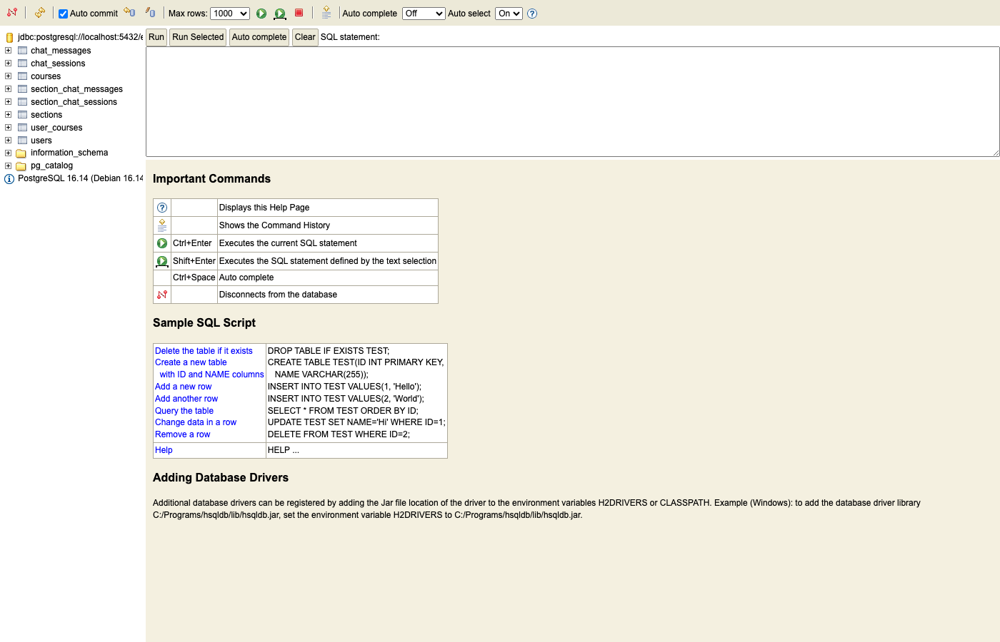
http://localhost:8080/h2-console.org.postgresql.Driver, JDBC URL to jdbc:postgresql://localhost:5432/enlightenment, User Name to ahaspace, Password to ahaspace.Zero rows, because no one has asked a section a question yet.
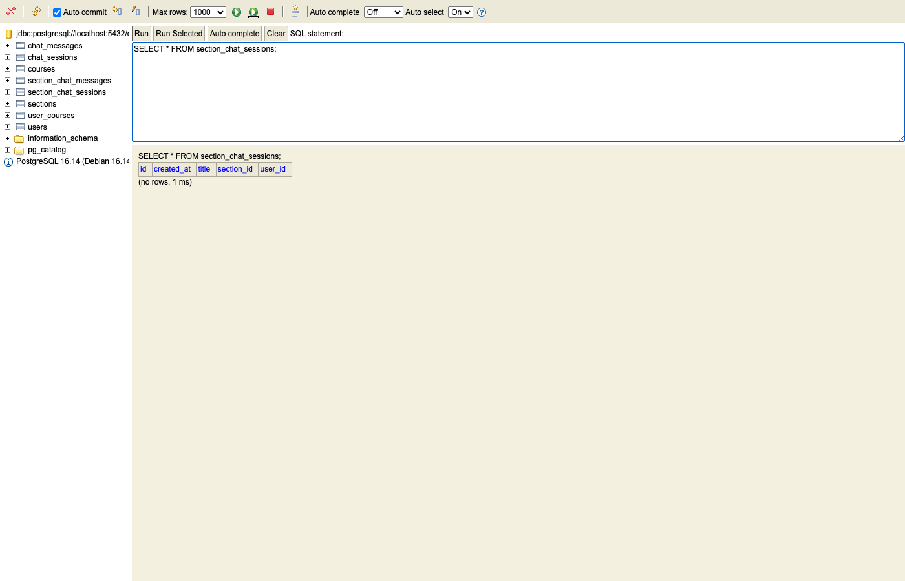
SELECT * FROM section_chat_sessions;
Same story for the message table.
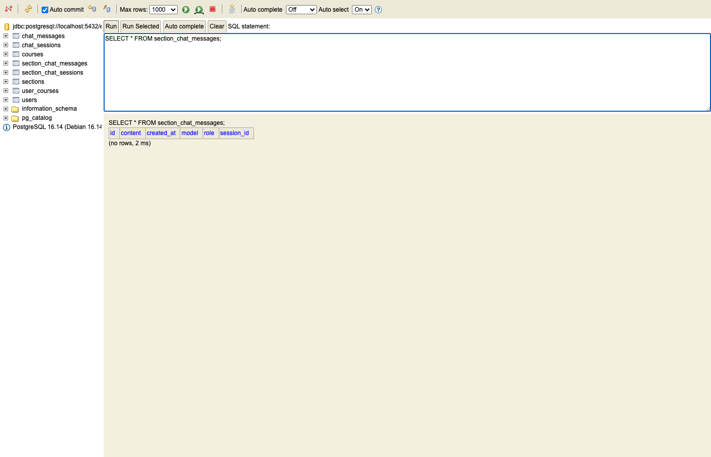
SELECT * FROM section_chat_messages;
A second course, Calculus Basics, inserted alongside Week 9's Intro to Algebra. The chat endpoints need a real Section to attach to, and this course's sections are written specifically to exercise this week's rendering pipeline — one plain-Markdown section, one with an actual LaTeX expression in it.
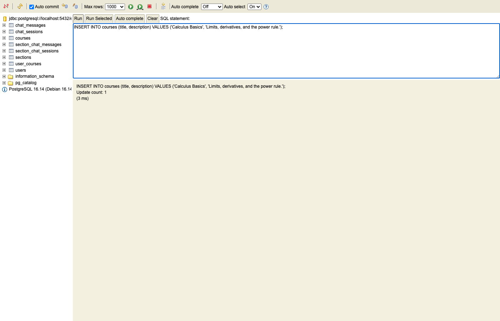
INSERT INTO courses (title, description) VALUES
('Calculus Basics', 'Limits, derivatives, and the power rule.');Got id 2 in this guide's own run, because Week 9's algebra course was still sitting at id 1 in that database. Your id may differ — if this is a fresh Postgres volume (e.g. docker compose down -v was ever run), or Week 9 wasn't run first in this container, Calculus Basics lands at id 1 instead. Step 06 below no longer hardcodes the id for this reason (it looks the course up by title), but every curl command from step 10 onward still needs the real numeric id, captured as a shell variable in step 07.
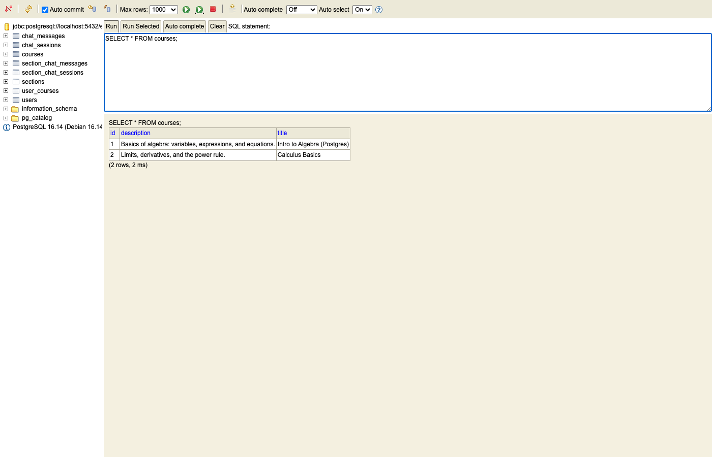
SELECT * FROM courses;
Note whatever id the Calculus Basics row actually got.
Both reference the Calculus Basics course by looking its id up with a subquery instead of a hardcoded number — this is what step 05 flagged: whatever numeric id that course actually got, this INSERT finds it correctly rather than assuming 2. (A hardcoded 2 is what caused a foreign-key violation in an earlier version of this guide when the course landed at id 1 instead.) The second section's content deliberately contains a block-level LaTeX expression ($$f'(x) = nx^{n-1}$$) and an inline one ($f(x) = x^2$) — this is the content step 22 later proves actually renders as real math in the browser, not literal dollar signs.
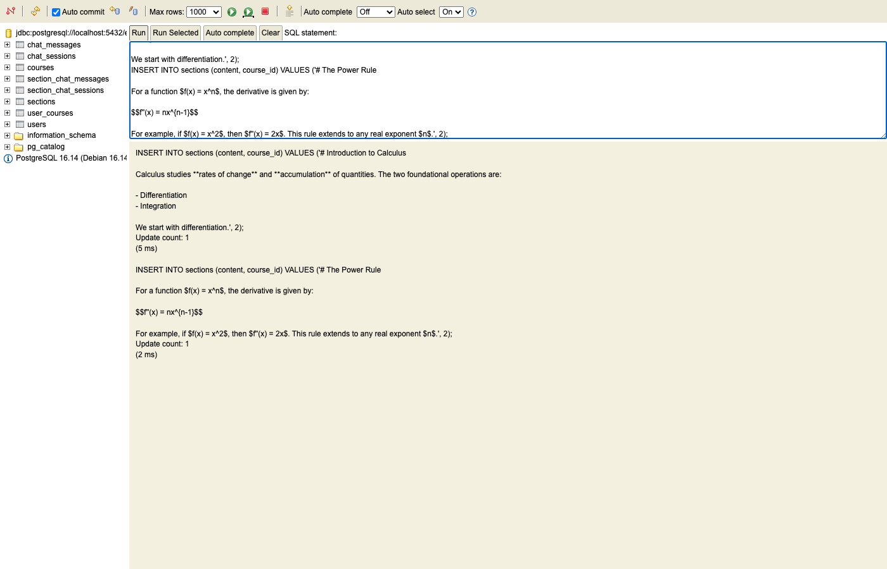
INSERT INTO sections (content, course_id) VALUES
('# Introduction to Calculus
Calculus studies **rates of change** and **accumulation** of quantities. The two foundational operations are:
- Differentiation
- Integration
We start with differentiation.', (SELECT id FROM courses WHERE title = 'Calculus Basics'));
INSERT INTO sections (content, course_id) VALUES
('# The Power Rule
For a function $f(x) = x^n$, the derivative is given by:
$$f''(x) = nx^{n-1}$$
For example, if $f(x) = x^2$, then $f''(x) = 2x$. This rule extends to any real exponent $n$.', (SELECT id FROM courses WHERE title = 'Calculus Basics'));
Note the doubled '' inside the SQL string literal — that's SQL's own escape for a single quote character, not a typo. It's what makes f'(x) show up correctly once the row is read back.
The (SELECT id FROM courses WHERE title = 'Calculus Basics') subquery runs once per INSERT and substitutes whatever id that course row actually has — this only works because title is unique in this seed data, not because of any database constraint enforcing it.
Section 3 is the plain-Markdown one, section 4 is the math-heavy one, in this guide's own run — sectionId=4 is what every chat call below targets, and what step 22's browser screenshot opens. Your ids may differ (see step 05), so capture the real values into shell variables now rather than tracking substitutions by hand for the rest of this guide.
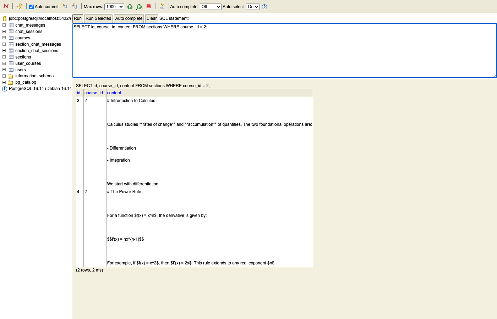
SELECT id, course_id, content FROM sections WHERE course_id = (SELECT id FROM courses WHERE title = 'Calculus Basics');
In the terminal where you'll run the curl commands below, set:
COURSE_ID=<the course_id column from the result above> SECTION_ID=<the id of the second row — the one with the LaTeX content>
Every curl command from step 10 onward uses $COURSE_ID/$SECTION_ID instead of a hardcoded number, so it works regardless of what this database actually assigned.
Identical mechanism to Week 9 — same /api/auth/register and /api/auth/login endpoints, same JWT scheme, nothing about auth changed this week. Two accounts are created here on purpose: week10_tester owns every session created below, and week10_tester2 exists purely to prove the ownership check in step 15 (a session created by one user is invisible to another, even with a valid token).
POST /api/auth/register — run twice, once per username. Response shown is for the first call; the second is identical apart from the username in the request body.
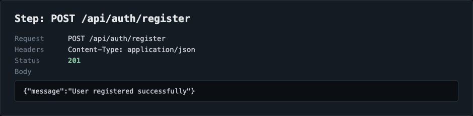
curl -s -X POST localhost:8080/api/auth/register \
-H "Content-Type: application/json" \
-d '{"username":"week10_tester","password":"testpass123"}'
curl -s -X POST localhost:8080/api/auth/register \
-H "Content-Type: application/json" \
-d '{"username":"week10_tester2","password":"testpass123"}'
Pick usernames you haven't used before — registering the same one twice fails.
POST /api/auth/login for each user. $TOKEN (week10_tester) is the Authorization header for every "success" and "owner" call below; $TOKEN2 (week10_tester2) is only used in step 15, to demonstrate the 403.
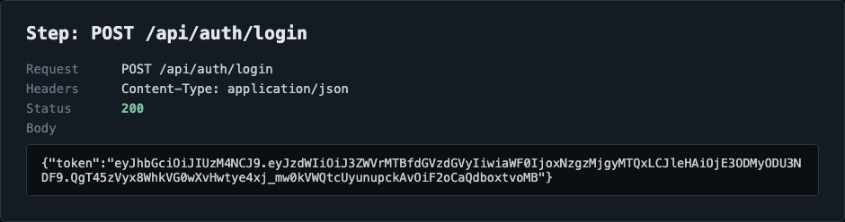
TOKEN=$(curl -s -X POST localhost:8080/api/auth/login \
-H "Content-Type: application/json" \
-d '{"username":"week10_tester","password":"testpass123"}' \
| python3 -c "import sys,json;print(json.load(sys.stdin)['token'])")
TOKEN2=$(curl -s -X POST localhost:8080/api/auth/login \
-H "Content-Type: application/json" \
-d '{"username":"week10_tester2","password":"testpass123"}' \
| python3 -c "import sys,json;print(json.load(sys.stdin)['token'])")
Week 9's guide already documents this exact register/login/JWT pattern in full — this step just reuses it against two new usernames rather than re-deriving the mechanism.
SectionChatController at /api/courses/{courseId}/sections/{sectionId}/chat — courseId is only in the URL for consistency with the frontend's route nesting, the actual lookup is keyed on sectionId alone. The try/catch ordering inside the controller is copied verbatim from the existing ChatController: a ResponseStatusException keeps its own status, an IllegalStateException (thrown by GeminiProvider when the API key is blank) becomes 500, and any other RuntimeException from the AI call becomes 400.
sessionId: null tells SectionChatService.processMessage to create a brand-new SectionChatSession rather than append to an existing one. The response's sessionTitle is the first 50 characters of the question (buildTitle, same truncation rule as the account-wide chat) plus "..." since the question ran past 50 characters. The response text is a genuine Gemini API call, not a stub — this is the actual model answering a question about the exact section content seeded in step 06.
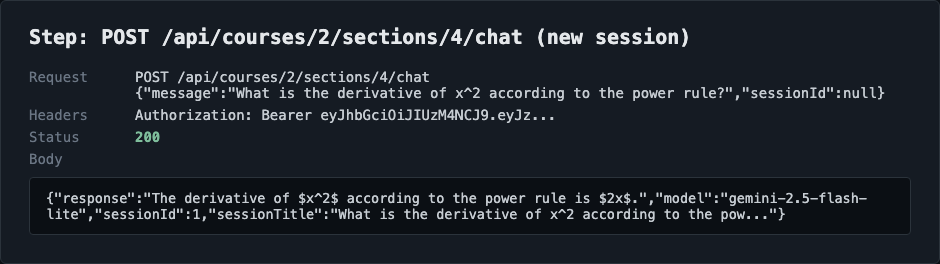
curl -s -X POST localhost:8080/api/courses/$COURSE_ID/sections/$SECTION_ID/chat \
-H "Content-Type: application/json" \
-H "Authorization: Bearer $TOKEN" \
-d '{"message":"What is the derivative of x^2 according to the power rule?","sessionId":null}'
Needs a real gemini.api.key configured in application-dev.yaml (see Troubleshooting below) — without one this returns 500 instead.
404 with {"error":"Section not found"}. This is the very first thing processMessage does — sectionRepository.findById(sectionId).orElseThrow(...) — before it ever touches a session, a user lookup, or the AI provider. A bad sectionId fails fast, before any database write happens.
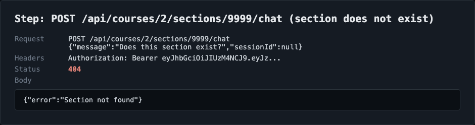
curl -s -X POST localhost:8080/api/courses/$COURSE_ID/sections/9999/chat \
-H "Content-Type: application/json" \
-H "Authorization: Bearer $TOKEN" \
-d '{"message":"Does this section exist?","sessionId":null}'Lists every session this user has on this section — the query is findByUserUsernameAndSectionIdOrderByCreatedAtDesc, filtered on both fields at once. That's the mechanism behind "multiple named chat threads per (user, section)" from decisions.md: nothing stops the same user from starting several independent conversations about one section, and nothing lets that list leak into a different section or a different user's sessions.
One entry — the session step 10 just created. Only id, title, createdAt come back; the full message list is a separate call (step 14), so opening a section doesn't force-load every message in every one of its threads.
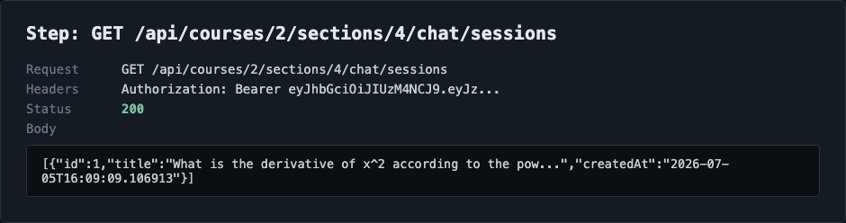
curl -s localhost:8080/api/courses/$COURSE_ID/sections/$SECTION_ID/chat/sessions \ -H "Authorization: Bearer $TOKEN" | python3 -m json.tool
403 with an empty body. Same behavior Week 9 documented for /api/courses: this app's Spring Security config has no custom AuthenticationEntryPoint, so the default unauthenticated response is 403, not 401. SecurityConfig's anyRequest().authenticated() covers these new nested /api/courses/** paths automatically — no security config change was needed for this feature.
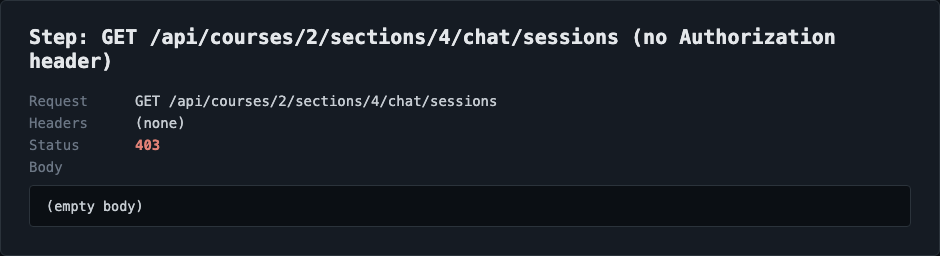
curl -s -o /dev/null -w "%{http_code}\n" localhost:8080/api/courses/$COURSE_ID/sections/$SECTION_ID/chat/sessionsReturns one session's full message history. Three checks happen in order before any data comes back: the session must exist, the caller must own it, and the session must actually belong to the sectionId in the URL (guards against reusing a session id that's valid but for a different section). This step exercises the ownership check specifically.
Two messages: the user's raw question, then the assistant's answer. Note model is null on the user message and "gemini-2.5-flash-lite" on the assistant message — only replies carry a model name, since only replies came from the model.
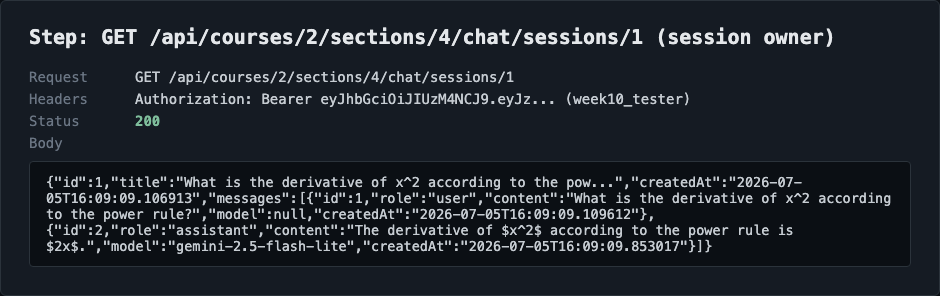
curl -s localhost:8080/api/courses/$COURSE_ID/sections/$SECTION_ID/chat/sessions/1 \ -H "Authorization: Bearer $TOKEN" | python3 -m json.tool
Use whatever sessionId step 10's response actually returned if it isn't 1.
403 with {"error":"Access denied"}. Same session id as step 14, but requested with $TOKEN2 (week10_tester2) instead of the session's actual owner. SectionChatService compares session.getUser().getUsername() against Authentication.getName() and throws before any message data is returned — a valid JWT alone isn't enough, it has to be this session's own user.
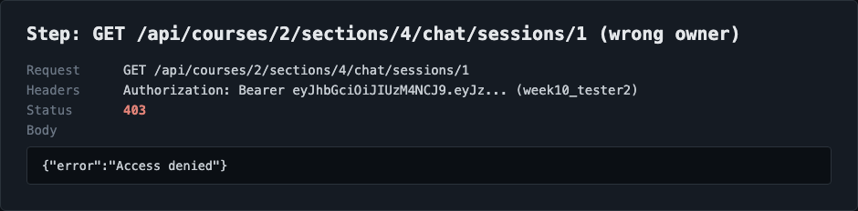
curl -s localhost:8080/api/courses/$COURSE_ID/sections/$SECTION_ID/chat/sessions/1 \ -H "Authorization: Bearer $TOKEN2" | python3 -m json.tool
This is the check that actually proves decisions.md's most important constraint: "SectionChatMessage.content stores only the raw user question; the section's content is spliced into the LLM prompt only at call-time, never persisted." Everything above exercised the API surface — this goes straight to the database to confirm what got written.
The session created in step 10, owned by week10_tester's user_id, pointing at section_id = 4.
SELECT * FROM section_chat_sessions;
Row 1's content is exactly "What is the derivative of x^2 according to the power rule?" — the raw question, character for character. It is not "Section content:\n# The Power Rule...\n\nQuestion: What is the derivative...", which is what SectionChatService actually sent to Gemini. That augmented string is built fresh inside processMessage, passed straight to aiProvider.chat(prompt), and never saved anywhere — only the pre-augmentation question and the model's answer get written to the table. This is why re-opening an old thread later doesn't re-send the whole section content to Gemini again on every render; it only happens once, at the moment a question is actually asked.
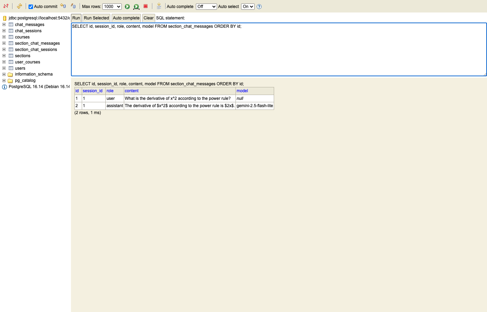
SELECT id, session_id, role, content, model FROM section_chat_messages ORDER BY id;
Real browser screenshots (headless Chromium via Playwright, screenshotted at each step) driving the actual React app — not a description of the components. A fresh account, week10_browser, is used here so its session sidebar starts empty and both threads created below are visibly new.
Register.jsx posts to the same /api/auth/register endpoint exercised via curl in step 08, then redirects to /?success=true on 201.
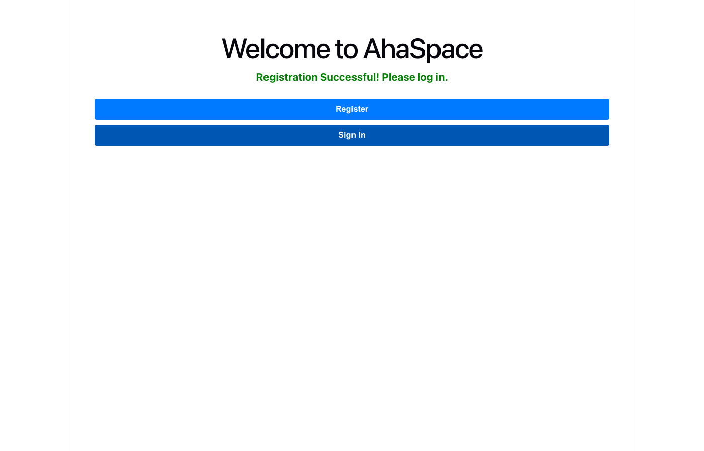
http://localhost:3000/register.AuthContext stores the JWT from the login response and every subsequent fetch (courses, sections, chat) reads it back out as an Authorization: Bearer header — the same JWT mechanism as the curl flow above, just held in React state/localStorage instead of a shell variable.
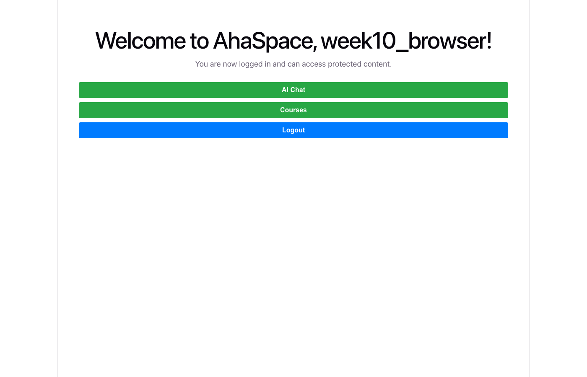
http://localhost:3000/login.CourseList.jsx — GETs /api/courses on mount, same endpoint and same shape (id/title/description) as Week 9. Both seeded courses show up, since nothing this week touches course visibility.
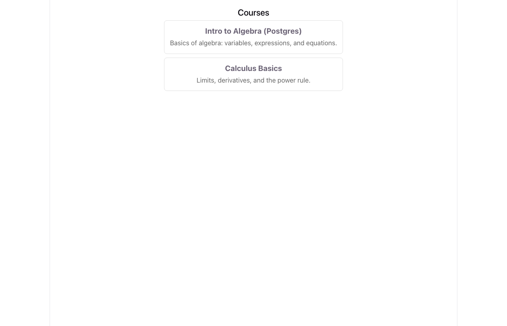
http://localhost:3000/courses.CourseSections.jsx — GETs /api/courses/2/sections. Sections have no title field in the backend model, so the page labels them "Section 1"/"Section 2" by list position and shows a truncated snippet of the raw Markdown as a stand-in description — that's why the snippet still shows literal # and $...$ characters here, unrendered. Rendering only happens one level deeper, inside the section itself.
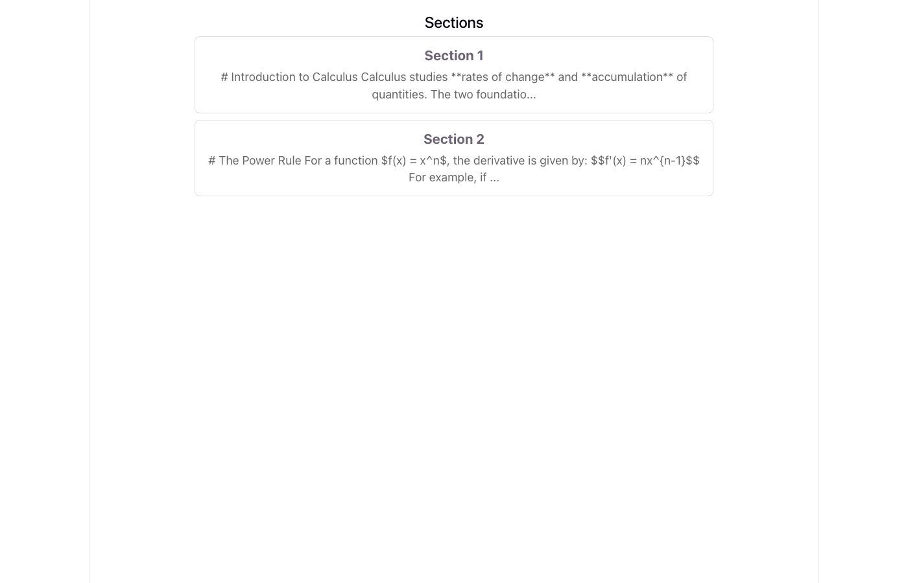
SectionView.jsx's left pane runs the section's content through <ReactMarkdown remarkPlugins={[remarkMath]} rehypePlugins={[rehypeKatex]}> — no dangerouslySetInnerHTML anywhere (confirmed during Phase 6 verification). remark-math recognizes the $...$/$$...$$ delimiters in the Markdown AST, rehype-katex turns the math nodes it finds into real KaTeX-rendered equations, and katex/dist/katex.min.css (imported once at the top of this file) supplies the fonts/spacing that make it look like typeset math instead of plain text. The heading, bold text, and the block-level $$f'(x) = nx^{n-1}$$ equation are all rendering correctly here — this is the actual proof that the LaTeX pipeline works, not just that the libraries are installed.
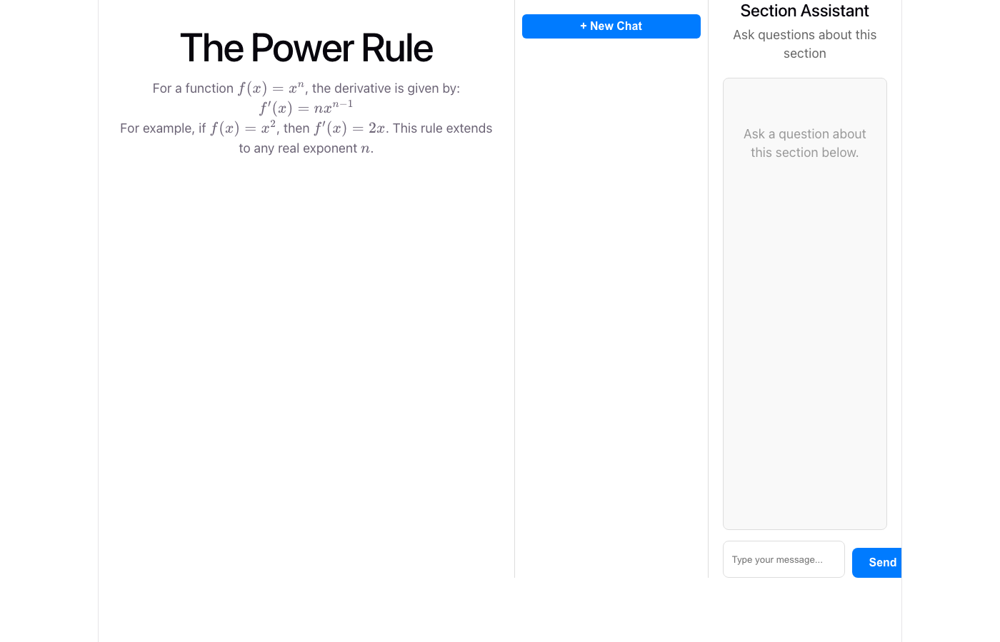
SectionAssistantPanel.jsx only ever mounts inside SectionView — there's no standalone route for it, which is what satisfies "the assistant appears only on a section content page" from decisions.md. Typing a question and sending it POSTs to /api/courses/2/sections/4/chat with sessionId: null (same request shape as step 10's curl call), and the real Gemini reply renders through the same ReactMarkdown+KaTeX pipeline as the lecture-notes pane on the left — visible here as a properly typeset exponent in the assistant's reply, not a raw ^ character.
Clicking + New Chat just clears local component state (activeSessionId back to null, messages back to []) — it doesn't call the backend by itself. The next message sent with sessionId: null is what actually creates the second SectionChatSession row server-side. The sidebar now lists both threads, newest first (findByUserUsernameAndSectionIdOrderByCreatedAtDesc), each labeled with its own truncated first-question title.
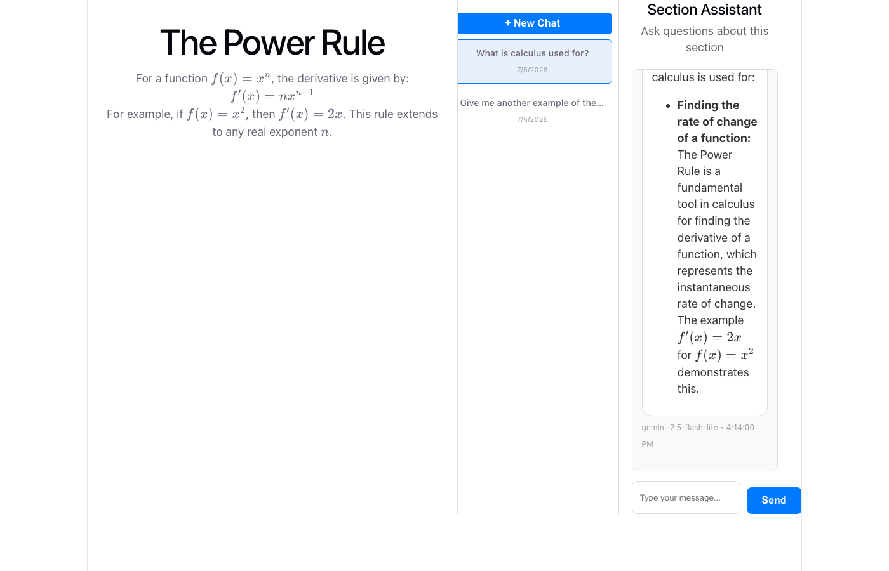
Clicking the first thread's entry in the sidebar calls handleSelectSession, which GETs /api/courses/2/sections/4/chat/sessions/{id} (same endpoint and response shape as step 14) and replaces the local messages array with that session's actual saved history. The highlighted sidebar entry moves, and thread 1's original question and answer reappear exactly as sent — proving the two threads are genuinely independent conversations, not one shared history being relabeled.
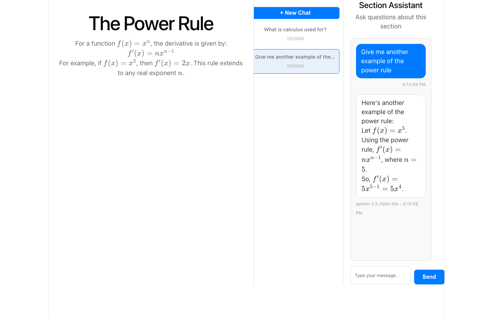
Two of these carry forward from Week 9's guide because nothing about the underlying mechanism changed; two are new to this week.
Spring Boot's APPLICATION FAILED TO START banner. Cause: a previous run of this same app is still alive and holding the port.
lsof -nP -iTCP:8080 -sTCP:LISTEN
ps -p <PID> -o pid,ppid,etime,command
kill -15 <PID>then
kill -9 <PID>if it's still listed a few seconds later.
dev profile: driver error mentioning ${DB_URL} literally (carried forward from Week 9)Happens if the three DB_* variables are exported on a separate shell line before running mvn, instead of inline on the same command — the export doesn't reach the mvn subprocess, so application-dev.yaml's ${DB_URL} placeholder is never resolved.
DB_URL=jdbc:postgresql://localhost:5432/enlightenment \ DB_USERNAME=ahaspace \ DB_PASSWORD=ahaspace \ mvn spring-boot:run -Dspring-boot.run.profiles=dev
All three variables and the mvn invocation on one logical command, exactly as shown in Setup above.
Hit while capturing screenshots for this guide: two consecutive real calls to gemini-2.5-flash-lite failed with 503 Service Unavailable, logged by GeminiProvider as "This model is currently experiencing high demand. Spikes in demand are usually temporary. Please try again later." This is Google's infrastructure, not application code — SectionChatController's catch-all RuntimeException → 400 "Failed to get AI response" path handled it correctly (same path a genuinely bad request would hit), it just isn't the response a user actually wants to see for a transient upstream outage.
GeminiProvider would be the place to add it — out of scope for this week's decisions.md.The section-scoped chat endpoints have no meaning without a real Section row to attach to — there's no seed data shipped with the app, and no create-endpoint for courses/sections (by design, same as Week 9). Trying to exercise steps 10–17 before doing the Data Layer steps above just produces the same 404 as step 11's deliberate failure case, which can be confusing if you don't yet know that's expected.
/chat endpoint. That's why this guide is sequenced the way it is rather than jumping straight to the new endpoints.